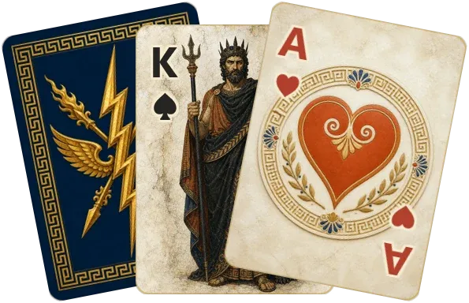
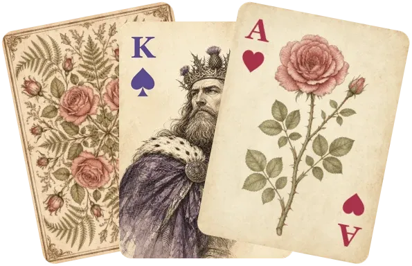
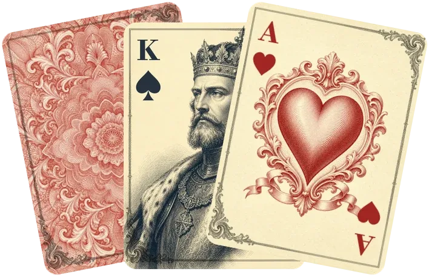
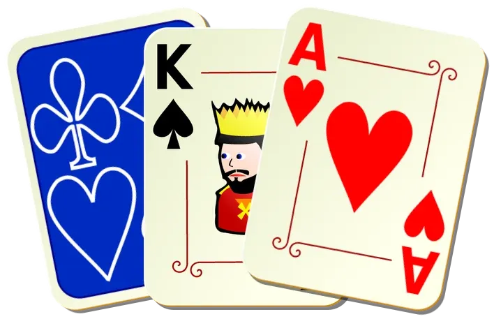
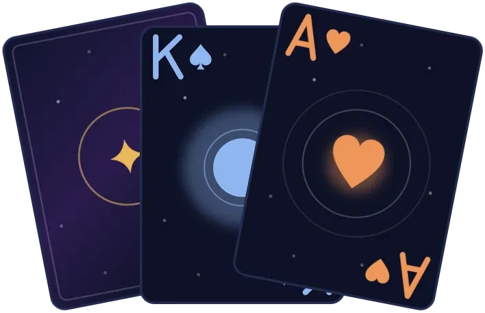
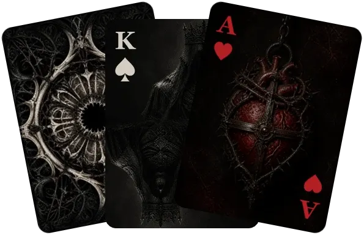
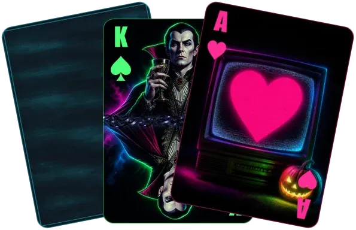
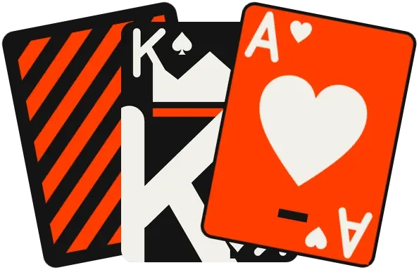
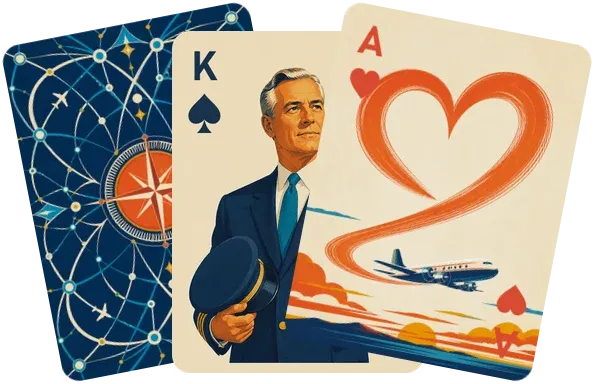
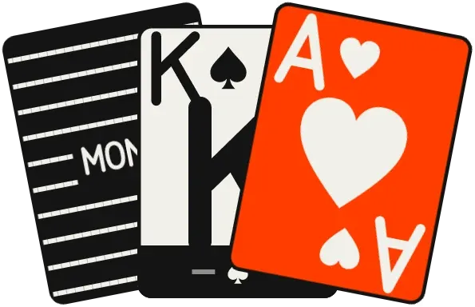

Felt House
The house deck, and the one Cardz deals until you choose another. Printed courts, aces and jokers in the French pattern, serif pips on the number cards, and a brass filigree back.
Decks
Switch at any time, even mid-game. 12 are built into Cardz, and 2 are free downloads.
The house deck, and the one Cardz deals until you choose another. Printed courts, aces and jokers in the French pattern, serif pips on the number cards, and a brass filigree back.

A Norse woodcut deck with two-headed courts. The pair of Loki jokers are worth finding.

Ancient Egypt on papyrus. A small gold cartouche beside each index shows the rank that card pairs with to make thirteen, which is most of Pyramid solved in the corner of your eye.

Gods painted on marble, with a gold index laid over the plate.

A pressed-botanical plate book in ink and watercolour, with the four suits as four plant families — rose, marigold, clover, thistle — on a deep botanical-green table.

Engraved in vermilion and iron-gall ink, the classic red and black, on an espresso-leather writing desk.

Fine Victorian ornament on a damask table. The first illustrated deck Cardz shipped.
Card art by Nicu Buculei, from his OpenClipart ornamental deck. Released into the public domain (CC0 1.0).

A space deck: dark navy cards, orbital pips, celestial courts, and four colours of suit instead of the usual two.

A midnight arcade. Near-black cards lit cyan and magenta, with glowing two-headed courts. The sign over the table hums and stutters while you play.

Gothic horror in soot black, dried-blood crimson and bone ash, with mirrored court portraits and reliquary aces. The table is altar stone lit by a candle that gutters under the cards.

An 80s Halloween deck on worn videotape: horror-video-cover art, the reds in hot magenta and the blacks in slime green, each ace on a haunted television, and two zombie jokers. Scanlines and a tracking bar run over the whole table. Switch table effects off and the tape pauses.

Paper-cut shapes in two inks on a dark table: tally pips, and courts cut down to a crown, an orb and a blade.

Mid-century air travel as a sunlit airline poster. The courts are the crew, each ace is a plane tracing its suit across the sky, the jokers fly standby, and the backs are route maps in navy and orange.

Signal orange and black on bone-white stock. Every card wears its rank huge, with tally bars on the number cards and aces flooded in their colour, on a pale stone table.
Cardz also has a High-contrast deck, which follows your Windows setting, and a Colourblind deck with blue hearts and diamonds against black spades and clubs.